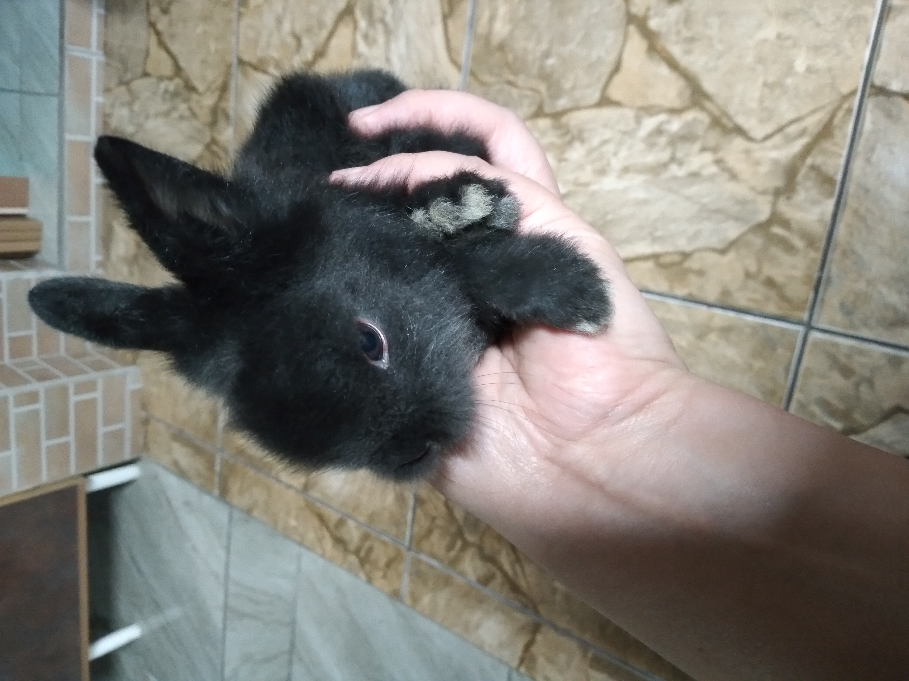

Um pouco sobre mim...

Me chamo Raquel Batista, nascida em Curitiba/PR - em 03/07/1973, filha de imigrantes japoneses, casada e feliz, mãe de três filhos e avó da Estherzinha. Trabalhei como dekasegui no Japão e amei conhecer um pouco da cultura de meus ancestrais. Hoje trabalho em um escritório, na parte de cadastros e estou cursando Tecnólogo de Análise e Desenvolvimento de Sistemas na UNINTER.
Meu lema é:" Sou grata à Deus por todas as coisas - ele é maravilhoso."
Os meus hobbies são meus pets - coelhinhos da raça lion head e fazer cursos da Alura, para sempre estar me atualizando, pois a inovação e a tecnologia estão por toda parte.
Já fiz vários cursos na Uninter e Alura, sendo os mais recentes:
- Spotfire
- Power BI
- HTML e CSS
- JavaScript
O "hanami", que é a contemplação da florada da cerejeira é um espetáculo por todo o Japão, que acontece no final de abril e dura poucos dias. Nesta época, os japoneses decretam uma semana de feriado nacional para apreciar a natureza e refletir.
Esta foto foi tirada em 2016, na cidade de Joso, na região sudoeste da província de Ibaraki - próxima à Tókio. O povo japonês ama a natureza, plantam flores por toda a parte e trocam como presentes.
Há muitos lugares bonitos que visitei, como o Monte Fuji e a Ilha de Miajima.
Mas não há lugar melhor que o Brasil, terra de gente alegre e batalhadora, que não desiste dos sonhos.
Em São Paulo, no Bairro da Liberdade, os descendentes de japoneses e brasileiros comemoram o "Tanabata Festival". Este ano foi julho - conforme a reportagem abaixo: